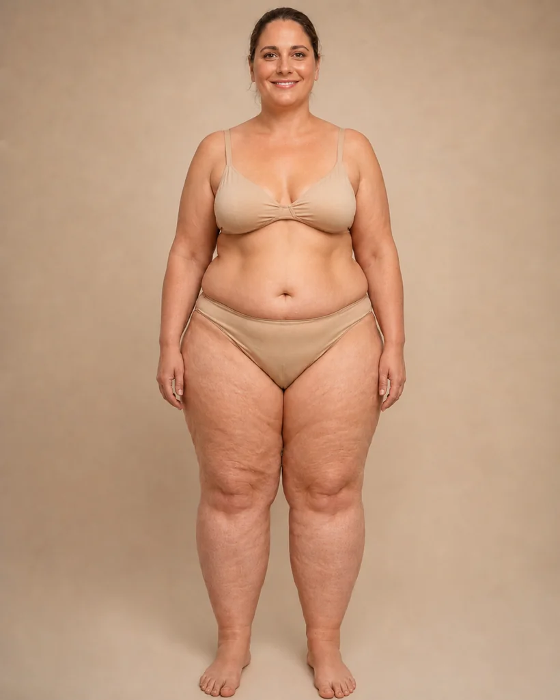

Lipedema y menopausia: por qué se relacionan
¿Notas que tus piernas han cambiado más en los últimos meses, justo cuando llegó la perimenopausia o la menopausia? No es tu imaginación: cada vez hay más evidencia de que el lipedema y los cambios hormonales de esta etapa están relacionados. Te contamos, con prudencia, qué dice la evidencia actual y qué puedes hacer para sentirte mejor.

No eres la única que ha sentido esto: más volumen, más pesadez, dolor al tocarte las piernas, justo cuando llegó la perimenopausia o la menopausia. La ciencia empieza a darle la razón a esa sensación. Cada estudio nuevo suma evidencia de que existe una relación real entre lipedema y menopausia: muchas mujeres cuentan que sus síntomas se notan más o empeoran justo en esta etapa de cambios hormonales. A continuación te contamos qué se sabe hasta el momento, con la prudencia que merece un tema todavía en investigación, y qué puedes hacer si te identificas con esto.
¿Por qué el lipedema puede empeorar en la menopausia?
El lipedema es una condición del tejido graso que, desde hace tiempo, se asocia a momentos de cambio hormonal marcado en la vida de una mujer: la pubertad, el embarazo y, para muchas, la perimenopausia y la menopausia. No parece casualidad que estos momentos tengan algo en común: son etapas en las que los niveles de estrógeno suben, bajan o se desequilibran de forma marcada.
Durante buena parte de la vida reproductiva, se cree que los estrógenos cumplen un papel regulador sobre el tejido graso y el sistema linfático. Al acercarse la menopausia, esos niveles caen de forma sostenida y, con ellos, parece perderse parte de ese efecto protector.
Algunas revisiones recientes, en un campo aún en desarrollo, plantean que el desequilibrio entre los distintos tipos de receptores de estrógeno en el tejido adiposo —y no solo la caída general de la hormona— podría ayudar a explicar por qué el lipedema tiende a agravarse en esta etapa.
El papel de los estrógenos y lo que aún no sabemos
Es importante ser honestos: la relación entre hormonas y lipedema es un campo de investigación activo, y todavía queda mucho por entender. Algunos estudios sugieren que la caída de estrógeno en la menopausia puede afectar la resistencia del tejido conectivo, aumentar la permeabilidad de los vasos sanguíneos y favorecer la retención de líquidos. Esto ayudaría a explicar por qué muchas mujeres notan más hinchazón, más sensibilidad al dolor o un aumento del volumen en las piernas y, a veces, en los brazos.
También se ha planteado que la menor disponibilidad de estrógeno podría afectar el drenaje linfático, que ya suele estar comprometido en el lipedema.
Dicho esto, hoy no existe una causa única identificada, y no se puede afirmar que la menopausia "cause" el lipedema en sentido estricto. Lo que sí parece consistente entre distintas fuentes es que la menopausia actúa como un punto de inflexión: para algunas mujeres es cuando el lipedema, que quizás pasó desapercibido antes, se hace evidente por primera vez; para otras, es cuando una condición ya diagnosticada progresa con más rapidez.
Los cambios hormonales de la menopausia no son la única explicación del lipedema, pero para muchas mujeres marcan el momento en que la condición se vuelve más difícil de ignorar.
¿Qué puedes hacer si notas cambios en esta etapa?
Si estás en la perimenopausia o la menopausia y notas que tus piernas cambian, lo primero es no restarle importancia ni asumir que "es solo el peso" o "es normal de la edad". Una valoración con alguien que conozca el lipedema puede ayudarte a entender qué está pasando y a diferenciarlo de otras causas de hinchazón, como la insuficiencia venosa, que también es más frecuente con los años.
Mientras tanto, algunas medidas de manejo conservador pueden ayudarte a sentirte mejor y a cuidar el tejido:
- Actividad física de bajo impacto: caminar, nadar o hacer ejercicio en agua ayuda a activar la bomba muscular de las piernas y favorece el retorno linfático y venoso.
- Compresión adecuada: las prendas de compresión, bien indicadas y ajustadas a tu caso, pueden ayudar a controlar la hinchazón y la sensación de pesadez.
- Drenaje linfático manual: realizado por un profesional entrenado, puede aliviar la molestia y la sensación de tensión en el tejido.
- Cuidado de la piel: mantenerla hidratada y vigilar cualquier cambio ayuda a detectar a tiempo complicaciones.
- Alimentación equilibrada, sin caer en dietas extremas: el tejido del lipedema no responde a la restricción calórica de la misma forma que otras acumulaciones de grasa.
Sobre la terapia hormonal de la menopausia y su efecto en el lipedema, la evidencia todavía es limitada y varía de una persona a otra, así que cualquier decisión sobre manejo hormonal debe conversarse con tu ginecólogo o médico tratante, considerando tu historia completa y nunca de forma genérica.
Lipedema y menopausia: por qué vale la pena una valoración a tiempo
Entender la relación entre el lipedema y la menopausia te da algo valioso: la tranquilidad de no tener que conformarte con explicaciones que no encajan con lo que sientes. Si tus piernas han cambiado en los últimos meses o años y esto coincide con esta etapa de tu vida, mereces una valoración completa, no solo la recomendación genérica de "bajar de peso". En Seravena podemos ayudarte a entender qué hay detrás de esos cambios y a construir un acompañamiento realista. Conoce más sobre el manejo del lipedema y sobre cómo evaluamos la salud vascular de tus piernas, y cuando quieras, agenda tu valoración con nuestro equipo.